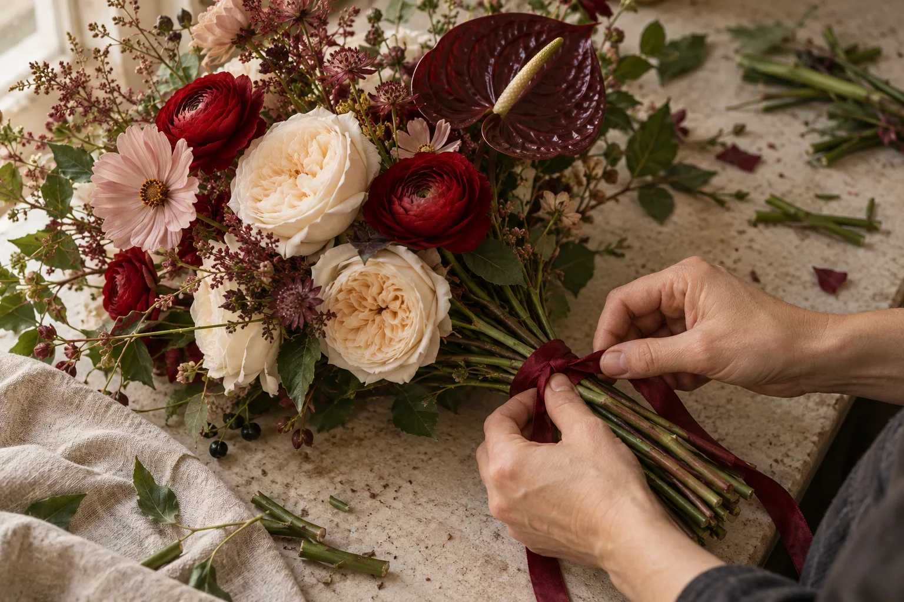

Начать с оттенка
Молочный для тихого комплимента, алый для большого жеста. Или сочетание, которое понятно только вам двоим.
ГЛАВНАЯ / МАСТЕРСКАЯ
Именно это нам и нравится.

ПОЧЕМУ «АЛЫЙ»
Алый — цвет, который невозможно не заметить. Так мы и думаем о цветах: не как об обязательном подарке, а как о способе быть услышанным.
Неровный стебель, раскрытый лепесток, неожиданная ветка — всё это делает букет живым. Мы оставляем ему свободу.
Познакомиться с букетамиИЗ ЧЕГО СКЛАДЫВАЕТСЯ БУКЕТ
Несколько стеблей, немного воздуха и один акцент. У каждого букета — свой ритм.

Молочный для тихого комплимента, алый для большого жеста. Или сочетание, которое понятно только вам двоим.
Крупный цветок задаёт характер, лёгкие стебли добавляют движение. Не стремимся к симметрии — ищем равновесие.
Открытые стебли, простая бумага, тонкая лента. Последний штрих подчёркивает цветы, а не прячет их.
В конструкторе можно выбрать цветы и сохранить своё сочетание.
ТРИ ПРОСТЫЕ ВЕЩИ
Выбираем цветы в их время. Пусть у каждого месяца будет свой запах, форма и цвет.
Не собираем цветы в идеальный шар. Оставляем разные высоты, воздух и движение.
Для подарка не обязательно искать повод. Иногда достаточно сказать: «Я о тебе думаю».
ПОРТФОЛИО-КОНЦЕПТ